dní na rozmyslenie
Ak vám Starlink nesadne, zrušíte službu a nepoškodenú súpravu do 30 dní vrátite. Starlink vám podľa svojich podmienok vráti peniaze za zariadenie aj za prvý mesiac. Nič neriskujete.
Satelitný internet · overené doma
Kúpil som si Starlink, vybalil ho, zapojil a anténu len tak položil na terasu. Pár minút po zapnutí som meral 208 Mb/s. Na tejto stránke je všetko, čo by som bol rád vedel pred objednávkou: skutočné fotky, namerané čísla aj veci, ktoré by vás mohli prekvapiť.
30 dní na vyskúšanie · 45 € pre vás po dvoch mesiacoch · bez technika
Prečo objednať cez môj odkaz
Ak vám Starlink nesadne, zrušíte službu a nepoškodenú súpravu do 30 dní vrátite. Starlink vám podľa svojich podmienok vráti peniaze za zariadenie aj za prvý mesiac. Nič neriskujete.
Keď si Starlink objednáte cez môj odkaz a budete ho používať aspoň dva mesiace, dostanete odmenu 45 €. Rovnakú sumu dostanem aj ja, takže úprimne: z odporúčania máme osoh obaja.
Hneď ako budete zákazníkom, dostanete vlastný odporúčací odkaz. Zdieľajte ho so susedmi, rodinou či kamarátmi na chalupe a za tých, ktorí ostanú, môžete získať odmenu aj vy.
Odmeny, skúšobnú dobu a ďalšie podmienky určuje Starlink a môžu sa meniť. Pred dokončením objednávky si ich vždy prečítajte.
Prečo o tom píšem
Keď som Starlink zvažoval, väčšina informácií bola po anglicky, plná technických pojmov alebo vyzerala ako reklama. Chýbalo mi niečo jednoduché: človek, ktorý si to kúpil a ukáže, ako to vyzerá doma.
Tak som si to napísal sám. Všetky fotky na tejto stránke som urobil ja, počas rozbaľovania a prvého zapojenia. Čísla rýchlosti sú moje, nie z letáku.
Ak budete po prečítaní váhať, je to v poriadku. Na to je tu 30-dňová skúšobná doba.
Bez technických rečí
Biely panel, zhruba ako väčší podnos. Položíte ho tam, kde vidí na oblohu, a on si satelity nájde sám.
Lietajú len okolo 550 km nad Zemou, nie 36 000 km ako klasické satelity. Preto je internet rýchly a bez otravného oneskorenia.
Satelity posielajú dáta na zem do staníc napojených na bežný internet. To riešite len vy a Starlink, nikto iný.
Z antény ide kábel do zdroja a z neho do routera. Ten rozdá Wi‑Fi po dome, presne ako ste zvyknutí.
Čo bolo v krabici
Plochá, ľahká, bez pohyblivých častí. Natočí sa elektronicky a v zime si sama roztopí sneh.
Stačí ho zacvaknúť a anténu položiť na zem, terasu či plochú strechu. Na stenu alebo strechu sa dajú dokúpiť držiaky.
Malý a nenápadný. Má dva LAN porty, takže počítač či televízor pripojíte aj káblom.
Napájací zdroj, 15 m kábel k anténe, 2 m kábel k routeru a kábel do zásuvky. Všetko je označené písmenami A, B, C.
Model a obsah balenia sa môžu meniť podľa aktuálnej ponuky. Toto je to, čo som dostal ja v novembri 2026.
Ako to prebehlo u mňa
Úprimne
Komu ho odporúčam
Ak vás trápi pomalý mobilný internet, výpadky alebo to, že k vám optika nikdy nepríde, Starlink je dnes najjednoduchšie riešenie, aké poznám.
Moje fotky
Všetko som fotil sám. Adresu, sériové čísla a ďalšie osobné údaje som zakryl. Fotku zväčšíte kliknutím.

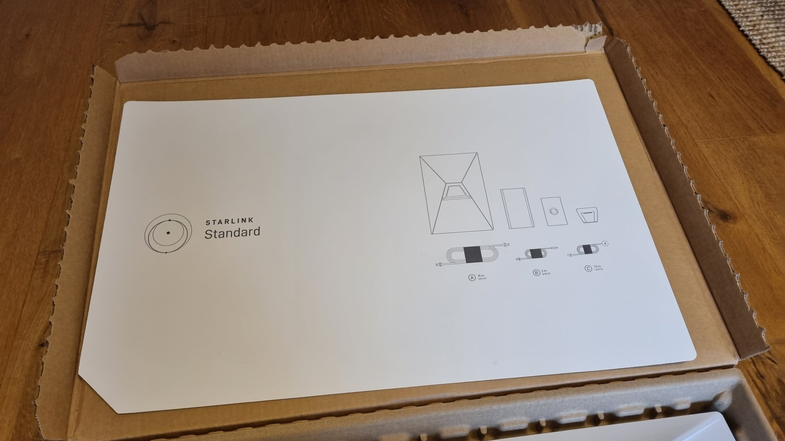
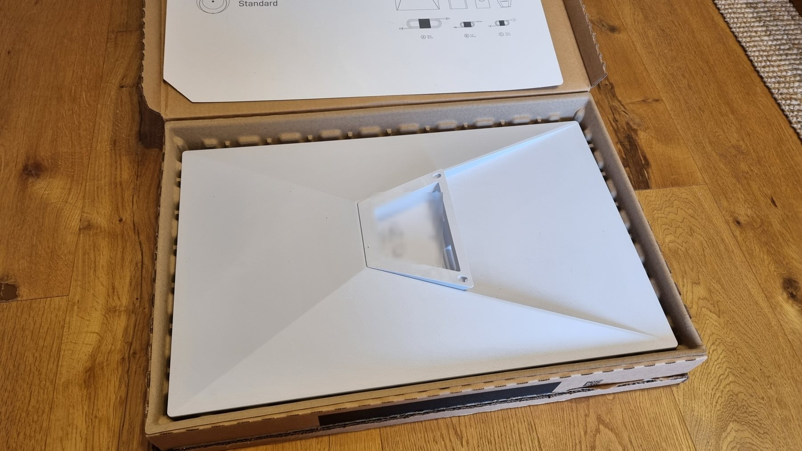
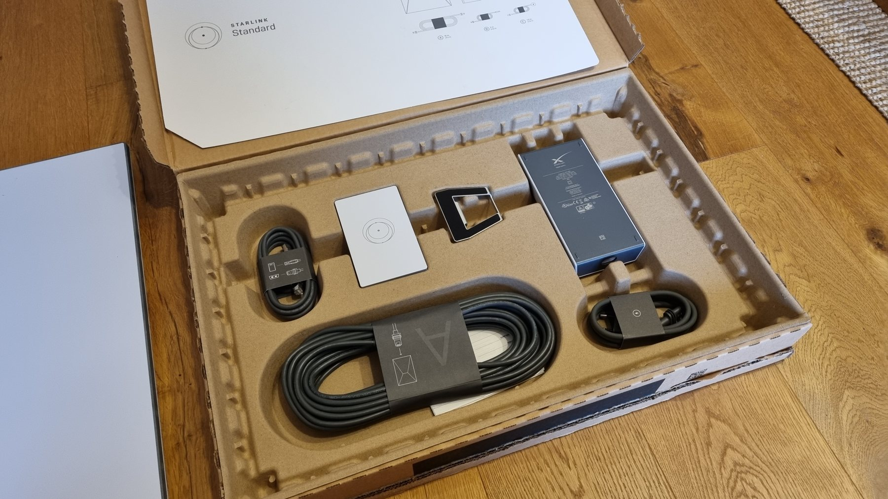
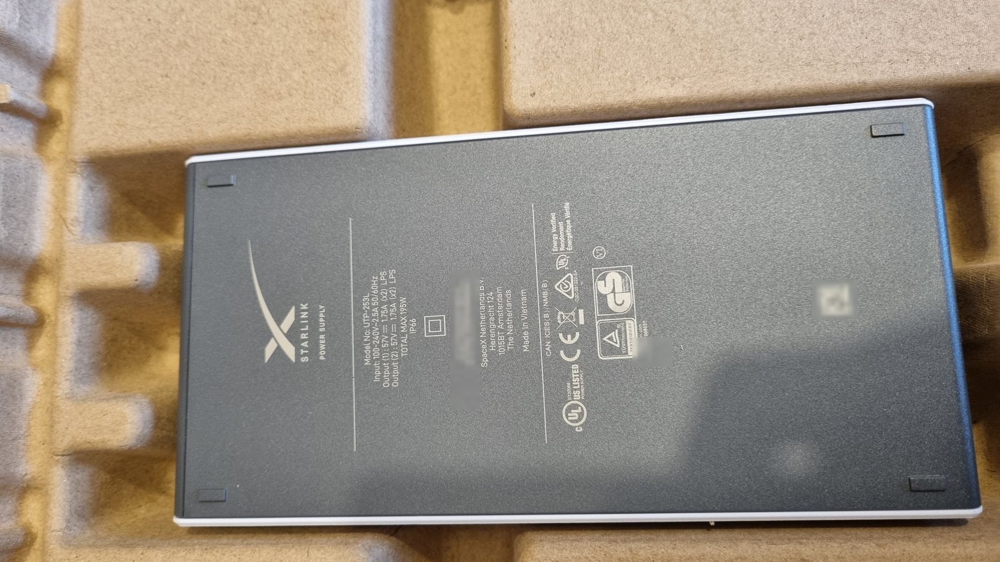
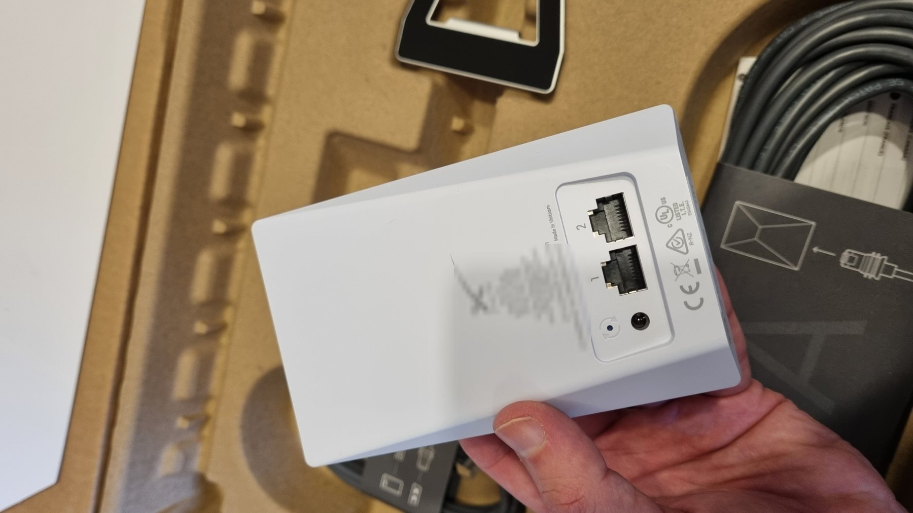
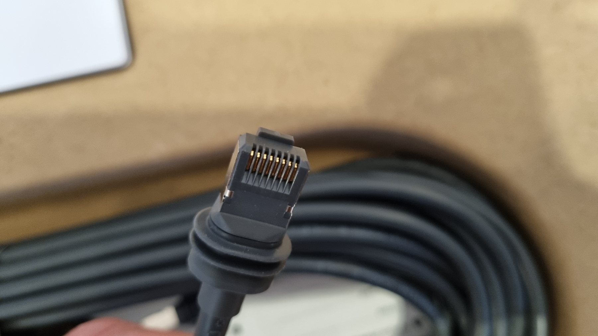
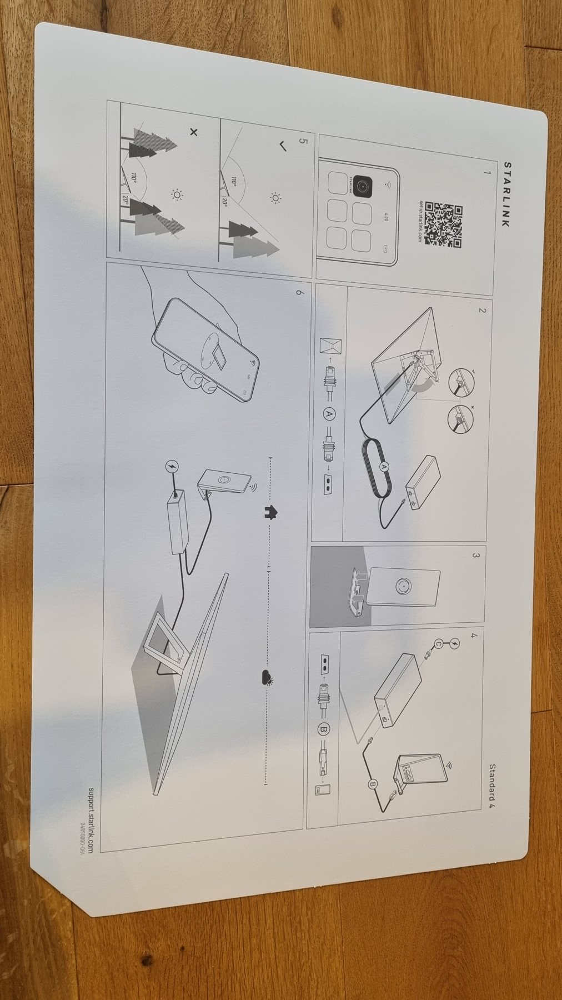

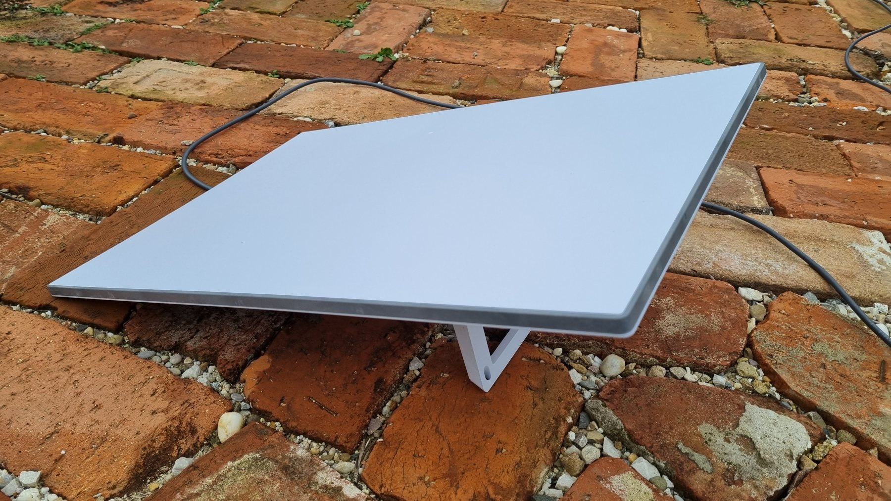

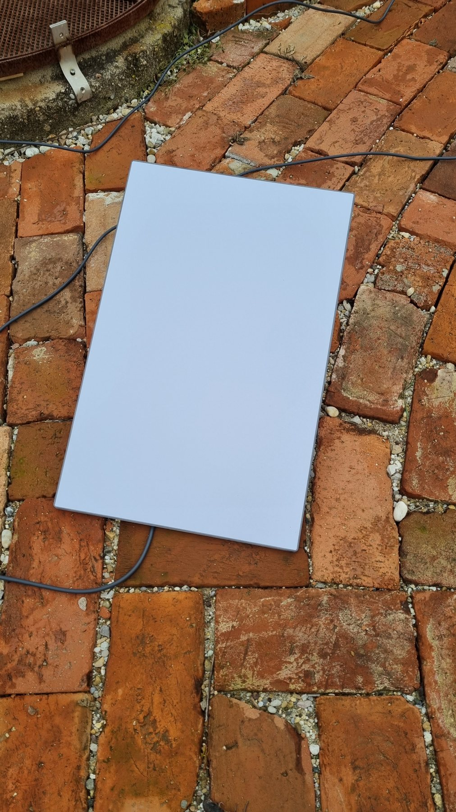

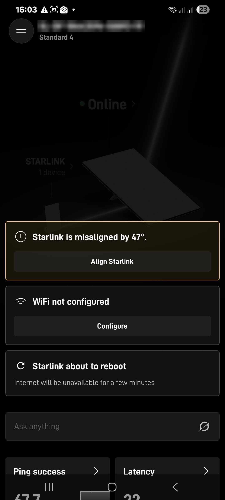
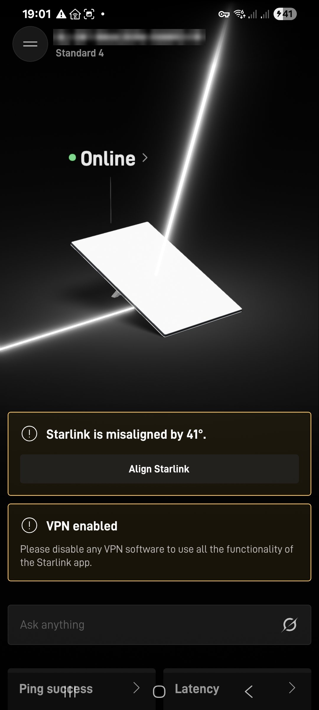

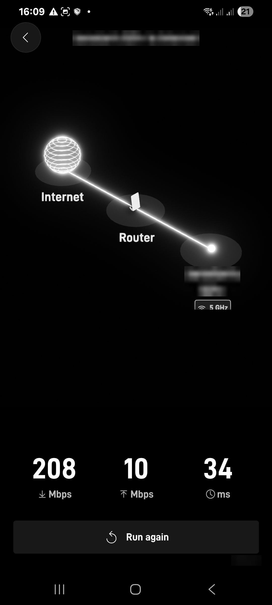
Časté otázky
Na to je skúšobná doba. Ak do 30 dní zrušíte službu a vrátite nepoškodenú súpravu, Starlink vám podľa svojich podmienok vráti peniaze za zariadenie aj prvý mesiac. Presné znenie nájdete pri objednávke.
Stačí objednať cez môj odkaz na tejto stránke a službu používať aspoň dva mesiace. Odmenu pripisuje Starlink podľa svojich aktuálnych pravidiel, ja do toho nijako nevstupujem.
Áno. Každý zákazník dostane vlastný odporúčací odkaz. Keď ho pošlete známym a oni si Starlink objednajú a ostanú, odmenu môžete dostať aj vy.
Nie vždy. Starlink v čase, keď píšem tento text, ponúkal pri niektorých plánoch aj prenájom zariadenia bez platby vopred. Ponuky sa často menia, preto si aktuálne možnosti pozrite pri objednávke po zadaní adresy.
Áno. Či je služba dostupná priamo na vašej adrese, uvidíte hneď na začiatku objednávky.
U mňa 208 Mb/s sťahovanie, 10 Mb/s nahrávanie a 34 ms odozva pri prvom teste. Rýchlosť sa líši podľa miesta, plánu, vyťaženia siete a výhľadu na oblohu, takže berte to ako príklad, nie ako záruku.
Silný dážď alebo hustý sneh môžu spojenie na chvíľu zhoršiť. Anténa má vyhrievanie a sneh si topí sama.
Záleží na tom, koľko oblohy zakrývajú. Aplikácia vám ešte pred objednávkou cez kameru telefónu ukáže, či je miesto vhodné. Ak nie, pomôže vyšší stožiar alebo držiak na strechu.
Nie. Píšem ju ja ako bežný zákazník. Nie som zamestnanec ani zástupca Starlinku či SpaceX.
Najhoršie, čo sa môže stať, je, že to vrátite. Najlepšie, že konečne budete mať internet, na ktorý sa dá spoľahnúť.
Objednať cez môj odkazOtvorí sa oficiálna stránka starlink.com. Objednávku aj platbu riešite priamo so Starlinkom.